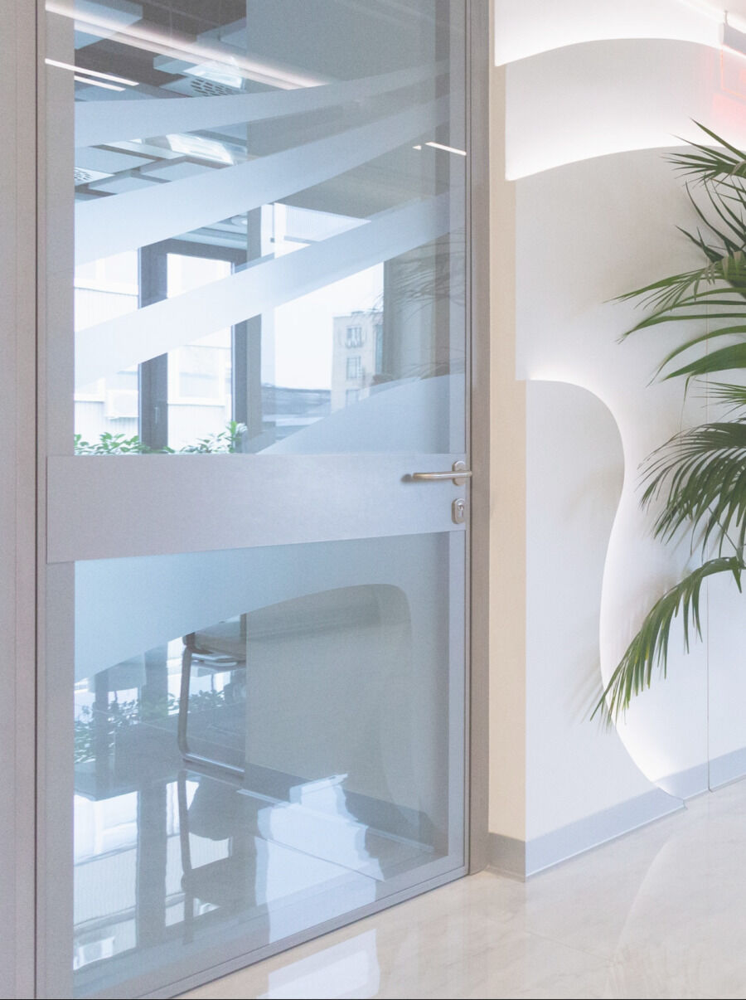

Про клініку
Наша історія
Клініку YVC Cosmetics засновано у 2019 році командою лікарів-дерматологів, які хотіли поєднати медичний підхід до здоров'я шкіри з комфортом преміального сервісу.
Сьогодні в клініці працюють чотири лікарі, три процедурні кабінети та кабінет апаратної косметології.
Принципи роботи
- консультація перед кожною новою процедурою;
- лише сертифіковані препарати з підтвердженим походженням;
- одноразові витратні матеріали та стерилізація інструментів;
- чесні рекомендації — без нав'язування непотрібних процедур.

Обладнання та препарати
- Апарат RF-ліфтингу з контролем температури шкіри.
- Діодний лазер для епіляції з системою охолодження.
- Апарат мікрострумової терапії.
- Препарати на основі гіалуронової кислоти та ботулотоксину, зареєстровані в Україні.
Ліцензія
Клініка має ліцензію МОЗ України на провадження господарської діяльності з медичної практики. Копію ліцензії можна переглянути на рецепції.
Сертифікати лікарів
Сертифікати та дипломи кожного лікаря наведено на сторінці «Лікарі».